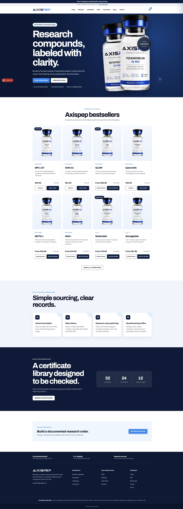

Guide
Getting started
Use the storefront to review research information and find the right catalogue item.
1. Start on the Axispep home page
Review the research-use notice, then select Explore catalogue or choose Shop from the main menu.

2. Review product information
Open a product card to see its available strengths, label details, price, and supporting information. Select the strength you need before adding it to the cart.
3. Use the information pages
The footer provides direct links to Research, Standards, Lab results, Shipping, Track order, Contact, About, FAQ, Official site, Privacy, and Terms.
Research use onlyAxispep products are presented for laboratory research and are not for human or animal consumption.